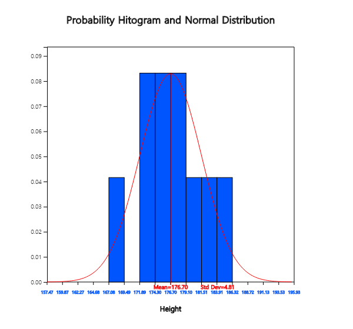
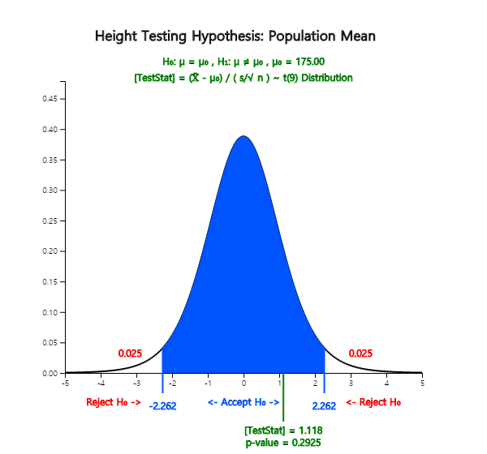
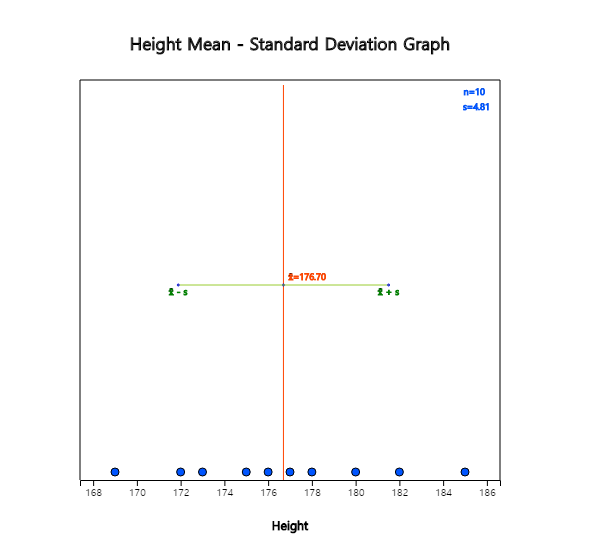
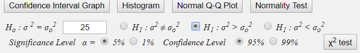

Estimation of population parameters using sample distributions was discussed in Chapter 6.
However, one might be interested in which one of two hypothesis about the population parameter is reasonable to accept.
This problem is called a testing hypothesis and we take samples and calculate the sample statistics to decide by using the sampling distributions discussed in Chapter 6.
In this chapter we discuss the testing hypothesis of the population mean, population variance and population proportion.
A method of testing hypothesis which considers both type 1 and type 2 error is also introduced.
Examples of testing hypothesis for a population mean are as follows.
- The weight of a cookie bag is indicated as 200g. Would there be enough cookies as the indicated weight?
- At a light bulb factory, a newly developed light bulb advertises a longer bulb life than the past one. Is this propaganda reliable?
- Immediately after completing this year's academic test, students said that there will be 5 points increase in the average English score higher than last year. How can you investigate if this is true?
Testing hypothesis is the answer to the above questions (hypothesis). That is, the testing hypothesis is to decide statistically which hypothesis is to use for the two hypotheses about the unknown population parameter using samples. In this section, we examine the test of the population mean, population variance, and population proportion which are most commonly used in testing hypothesis.
The following example explains the theory of testing hypothesis of the population mean in single population.
Example 7.1.1
At a light bulb factory, the average life expectancy of a light bulb made by a conventional production method is known
to be 1500 hours and the standard deviation is 200 hours. Recently, the company is trying to introduce a new production method,
with the average life expectancy of 1600 hours for light bulbs. To confirm this argument, 30 samples were taken from
the new type of light bulbs by simple random sampling and the sample mean was \(\small \overline x \) = 1555 hours.
Can you tell me that the new type of light bulb has the average life of 1600 hours?
Answer
A statistical approach to the question of this issue is first to make two assumptions about the different arguments
for the population mean μ . Namely,
$$ \small
\begin{multline}
\shoveleft H_0 : μ = 1500 \\
\shoveleft H_1 : μ = 1600
\end{multline}
$$
\(\small H_0\) is called a null hypothesis and \(\small H_1\) is an alternative hypothesis.
In most cases, the null hypothesis is defined as an ‘existing known fact’, and the alternative hypothesis is defined as
‘new facts or changes in current beliefs’. So when choosing between two hypotheses, the basic idea of testing hypothesis
is 'unless there is a significant reason, we accept the null hypothesis (current fact) without choosing the alternative
hypothesis (the fact of the matter). This idea of testing hypothesis is referred to as a ‘conservative decision making’.
A common sense criterion for choosing between two hypotheses would be 'which population mean of two hypothesis is
closer in distance to the sample mean'. Based on this common sense criteria which uses the concept of distance,
the sample mean of 1555 is closer to \(\small H_1 : μ = 1600\) so the alternative hypothesis will be chosen.
A statistical testing hypothesis is based not only on this common sense criteria, but also on the sampling distribution of \(\small \overline X\).
In other words, the statistical testing hypothesis is to select a critical value \(C\) based on the sampling distribution theory and to make a decision rule as follows:
\( \small
\qquad \text { ‘If \(\overline X\) is smaller than C, then the null hypothesis \(H_0\) will be chosen, else reject \(H_0\)’}
\)
The area of {\(\small \overline X < C\)} is called an acceptance region of \(\small H_0\) and the area {\(\small \overline X ≥ C\)} is called
a rejection region of \(\small H_0\) (<Figure 7.1.1>).
<Figure 7.1.1> Acceptance and rejection region of \(H_{0}\)
If a hypothesis is chosen by this decision rule, there are always two possible errors in the decision.
One is a Type 1 Error which accepts \(\small H_1\) when \(\small H_0\) is true,
the other is a Type 2 Error which accept \(\small H_0\) when \(\small H_1\) is true.
These errors can be summarized as Table 7.1.1.
Table 7.1.1 Two types of errors in testing hypothesis
Actual \(\small H_0\) is true
Actual \(\small H_1\) is true
Decision : \(\small H_0\) is true
Correct
Type 2 Error
Decision : \(\small H_1\) is true
Type 1 Error
Correct
If you try to reduce one type of error when the sample size is fixed, then the other type of error is increasing.
That is why we came up with a conservative decision making method that defines the null hypothesis \(\small H_0\)
as 'past or present facts' and 'accept the null hypothesis unless there is a significance evidence for the
alternative hypothesis.' In this conservative way, we try to reduce the type 1 error as much as possible that selects
\(\small H_1\) when \(\small H_0\) is true, which would be more risky than the type 2 error. Testing hypothesis
determines the tolerance for the probability of the type 1 error, usually 5% or 1% for rigorous test,
and use the selection criteria that satisfy this limitation. The tolerance for the probability that this
type 1 error will occur is called the significance level and is often expressed as α.
The probability of the type 2 error is expressed as β.
If the significance level is established, the decision rule for the two hypotheses can be tested using the
sampling distribution of all possible sample means in Chapter 6. <Figure 7.1.2> shows the distribution
of populations for two hypotheses, and the distribution of all possible sample means for each population.
<Figure 7.1.2> Testing Hypothesis
If the population corresponds to the distribution of \(\small H_0\) : μ = 1500, the sampling distribution of
all possible sample means is approximated as \(\small N(1500,200^2 )\) by the central limit theorem.
If the population corresponds to the distribution of \(\small H_1\) : μ = 1600, the sampling distribution of
all possible sample means is approximated as \(\small N(1600,200^2 )\). The standard deviation for each population is
assumed to be 200 from a historical data. Then the decision rule becomes as follows:
\( \small
\qquad \text {‘If \(\overline X < C\), then accept \(H_{0}\), else accept \(H_{1}\) (i.e. reject \(H_{0}\) )’}
\)
In Figure 7.1.2, the shaded area represents the probability of the type 1 error. If we set the significance level,
which is the tolerance level of the type 1 error, is 5%, i.e. \(\small P(\overline X < C) = 0.95\), \(C\)
can be calculated by finding the percentile of the normal distribution \(\small N(1500,\frac{200^2}{30})\) as follows:
In this problem, the observed sample mean of the random variable \(\small \overline X\) is
\(\small \overline x\)= 1555 and \(\small H_0 \) is accepted. In other words, the hypothesis of
\(\small H_0 \) : μ = 1500 is judged to be correct, which contradicts the result of
common sense criteria that \(\small \overline x\) = 1555 is closer to \(\small H_1 \) : μ = 1600
than \(\small H_0 \) : μ = 1500. This result can be interpreted that the sample mean
of 1555 is not a sufficient evidence to reject the null hypothesis by a conservative decision making method.
The above decision rule is often written as follows, emphasizing that it is the result from a conservative decision making method.
\( \small
\qquad \text {‘If \(\overline X\) < 1560.06, then do not reject \(H_0\), else reject \(H_0 \).’}
\)
In addition, this decision rule can be written for calculation purpose as follows.
\( \small
\qquad \text {‘If \(\frac{\overline X - 1500}{\frac {200}{\sqrt{30}}}\), then accept \(H_0\) , else reject \(H_0\).’}
\)
In this case, since \(\small\overline x\) = 1555, \(\frac{1555 - 1500}{\frac {200}{\sqrt{30}}}\)
and it is less than 1.645. Therefore, we accept \(\small H_0\).
Since the testing hypothesis by the conservative decision making is only based on the probability of
the type 1 error as seen in [Example 7.1.1], even if the alternative hypothesis is \(H_1 : μ > 1500\),
we will have the same decision rule.
Generally, there are three types of alternative hypothesis in the testing hypothesis for the population mean as follows.
$$
\begin{align}
& 1)\quad H_1 : \mu \gt \mu_0 \\
& 2)\quad H_1 : \mu \lt \mu_0 \\
& 3)\quad H_1 : \mu \ne \mu_0 \\
\end{align}
$$
Since 1) has the rejection region on the right side of the sampling distribution of all possible sample means
under the null hypothesis, it is called a right-sided test. Since 2) has the rejection region on the left side
of the sampling distribution, it is called a left-sided test. Since 3) has rejection regions on both sides
of the sampling distribution, it is called a two-sided test. The decision rule for each type of three
alternative hypothesis are summarized in Table 7.1.2 when the population standard deviation is known and
α is the significance level.
Table 7.1.2 Testing hypothesis for the population mean - known σ case
If \(\small \left | \frac {\overline X - \mu_0}{ \frac {\sigma}{\sqrt{n}} } \right | > z_{α/2} \), then reject \( H_0 \)
Note: The \(H_0\) of 1) can be written as \(\; H_0 : \mu \le \mu_0 \) , 2) as \(\; H_0 : \mu \ge \mu_0 \)
The following expression used for the decision rule is referred to as a test statistic for testing hypothesis of the population mean.
$$\small
\frac {\overline X - \mu_0}{ \frac {\sigma}{\sqrt{n}} }
$$
The population standard deviation σ of the test statistic is usually unknown. However, if the sample is large enough
(approximately 30 or more), the hypothesis test can be performed using the sample standard deviation \(S\)
instead of the population standard deviation σ.
In [Example 7.1.1], if the sample mean is either 1555 or 1540, the null hypothesis can not be rejected,
but degrees of evidence that the null hypothesis is not rejected are different.
The degree of evidence that the null hypothesis is not rejected is measured by calculating the probability of the type 1 error
when the observed sample mean value is considered as the critical value for decision, which is called the \(p\)-value.
That is, the \(p\)-value indicates where the observed sample mean is located among all possible sample means by
considering the location of the alternative hypothesis. In [Example 7.1.1], the \(p\)-value for \(\small\overline X\) = 1540
is the probability of sample means which is greater than \(\small\overline X\) = 1540 by using \(N(1500, \frac{200^2}{30} )\).
The higher the \(p\)-value, the stronger the reason for not being rejected. If \(H_0\) is rejected, the smaller
the \(p\)-value, the stronger the grounds for being rejected. Therefore, if the \(p\)-value is less than the significance level
considered by the analyst, then \(H_0\) is rejected, because it means that the sample mean is in the rejection region.
Statistical packages provide this \(p\)-value.
Decision rule using \(p\)-value
If the \(p\)-value is less than the significance level, then \(H_0\) is rejected, else \(H_0\) is accepted.
The calculation of the \(p\)-value depending on the type of the alternative hypothesis is summarized as in Table 7.1.3.
If \(\small \overline X > \mu_0 \), then \(\small 2 P ( \overline X > {\overline x}_{obs} ) \), else \(\small 2 P ( \overline X < {\overline x}_{obs} ) \)
Note \(\small {\overline x}_{obs} \) is the observed sample mean
If the population standard deviation σ is unknown and the population is a normal distribution,
the test statistic
$$\small
\frac {\overline X - \mu_0}{ \frac {S}{\sqrt{n}} }
$$
is a \(t\) distribution with \((n-1)\) degrees of freedom. The testing hypothesis for the population
mean can be done as Table 7.1.4 which replace the \(Z\) distribution with the \(t\) distribution in
Table 7.1.2 and σ with \(S\).
Table 7.1.4 Testing hypothesis for a population mean - unknown σ case
(Assume that the population is a normal distribution)
If \(\small \left | \frac {\overline X - \mu_0}{ \frac {S}{\sqrt{n}} } \right | > t_{n-1; α/2} \), then reject \( H_0 \)
Note: The \(\small H_0\) of 1) can be written as \(\small H_0 : \mu \le \mu_0 \) , 2) as \(\small H_0 : \mu \ge \mu_0 \)
If the sample size is large enough (approximately 30 or more), the \(t\) distribution is
approximated to the standard normal distribution, so the testing hypothesis in Table 7.1.4
can be performed using the standard normal distribution, \(Z\) , instead of \(t\) distribution.
Example 7.1.2
The weight of a bag of cookies is supposed to be 250 grams. Suppose the weight of all bags of cookies is a normal distribution. In the survey of 100 samples of bags which were randomly selected, the sample mean was 253 grams and the standard deviation was 10 grams.
1) Test hypothesis whether the weight of the bag of cookies is 250g or larger and find the \(p\)-value. α = 1％
2) Test hypothesis whether or not the weight of the bag of cookies is 250g and find the \(p\)-value. α = 1％
3) Use 『eStatU』 to test the hypothesis above.
Answer
1) The hypothesis is a right tail test as \(\small H_0 : \mu; \) = 250,
\(\small H_0 : \mu; \) > 250. Since the sample size is large (\(n\)=100), we can use
\(Z\) distribution instead of \(t\) distribution. Decision rule is as follows.
Since \( \frac {253 - 250}{ \frac {10}{\sqrt{100}} } \) = 3 and \(z_{0.01}\)= 2.326, \(\small H_0 \) is rejected.
We can write the above decision rule as follows:
Since the \(p\)-value is the probability of Type 1 error when the sample mean is the critical value.
it can be calculated by the probability of ( \(\small P( \overline X\) > 253). Since the distribution of
\(\small \overline X\) is approximately \(\small N(250, \frac{100}{100} ) \) when \(\small H_0 : \mu \) = 250 is true,
the \(p\)-value is as follows:
\( \small
\qquad \qquad p\text{-value} = P( \overline X \gt 253) = P( Z \gt \frac{253-250}{\frac{10}{10}} ) = P( Z \gt 3) = 0.0013
\)
2) The hypothesis is a two-sided test as \(\small H_0 : \mu = 250, H_1 \ne 250 \). Since the sample size is
large (\(n\)=100), we can use the \(Z\) distribution instead of the \(t\) distribution.
Decision rule is as follows.
Since \( \frac {253-250} {\frac{10}{10}} = 3 \) and \(z_{0.005}\) = 2.575, \(\small H_0 \) is rejected.
The \(p\)-value can be calculated as follows:
\( \small
\qquad \qquad p\text{-value} = 2 P(\overline X \gt 253) = 2 P(\overline X \gt \frac{253-250}{\frac{10}{10}} = 2 P( Z \gt 3) = 0.0026
\)
3) In 『eStatU』 menu, select [Testing Hypothesis μ], enter 250 at the box of on [Hypothesis] and
select the alternative hypothesis as the right test in the window shown in <Figure 7.1.3>.
Check [Test Type] as Z test and enter population variance \(10^2 = 100\). For the Z test,
you must enter the population variance.
Check the significance level at 1%.
At the [Sample Statistics], enter sample size 100, sample mean 253.
If you click the [Execute] button, the confidence Interval for μ is calculated and
the testing result using 『eStatU』 will appear as in <Figure 7.1.4>.
[Testing Hypothesis : Population Mean μ ]
<Figure 7.1.4> 『eStatU』 Testing Hypothes for μ - Right Tail Test
If you select the two-tail test at [Hypothesis] of <Figure 7.1.3>, testing result using 『eStatU』 is as <Figure 7.1.5>.
<Figure 7.1.5> 『eStatU』 Testing Hypothes for μ - Two Tails Test
Example 7.1.3
When the sample size is 16 and the sample variance is 100 in [Example 7.1.2], test whether the average weight
of the cookie bags is 250g or greater and obtain the \(p\)-value. Check the result using 『eStatU』
Answer
Since the population standard deviation is unknown and the sample size is small, the decision rule
is as follows.
$$ \small
\begin{multline}
\shoveleft \text{'If } \frac {\overline X - \mu_0} {\frac {S}{\sqrt{n}} } > t_{n-1: α} , \text{ then reject } H_0 \text{ else accept } H_0 ’ \\
\shoveleft \text{'If } \frac {253 - 250}{ \frac {10}{\sqrt{16}} } > t_{16: 0.01} , \text{ then reject } H_0 \text{ else accept } H_0 ’ \\
\end{multline}
$$
Since the value of test statistic is \( \frac {253 - 250}{ \frac {10}{\sqrt{16}} } = 1.2 \),
and \(t_{15: 0.01} = 2.602\) , we accept \(\small H_0\). Note that the decision rule can be written as follows.
In <Figure 7.1.3> of 『eStatU』 , select the right-sided test of [Hypothesis], select the \(t\)-test
on [Test Type] and enter sample size \(n\) = 16, then the test result is as <Figure 7.1.6>
if you click the [Execute] button.
<Figure 7.1.6> Testing hypothesis for μ with \(t\) distribution using 『eStatU』
Since the \(p\)-value is the probability that \(t_{15}\) is greater than the test statistics 1.200,
the \(p\)-value is 0.124 by using the module of \(t\) distribution in 『eStatU』.
Example 7.1.4
(Heights of college students)
10 male students are sampled in a university and examined their heights as follows:
172 175 178 182 176 180 169 185 173 177 (Unit cm)
Ex ⇨ eBook ⇨ EX070104_Height.csv.
Test the hypothesis whether the population mean is 175cm or greater with the significance level of 5%.
Answer
After entering data on a sheet as shown in <Figure 7.1.7> in 『eStat』 , clicking the testing
hypothesis for the population mean and then clicking variable name V1 for 'Analysis Var' in variable
selection box will result in a dot graph with 95% confidence interval as in <Figure 7.1.8>.
<Figure 7.1.7> Data input
<Figure 7.1.8> Dot graph and confidence interval
If you click [Histogram] button from option menu below the graph as in <Figure 7.1.9>,
the corresponding histogram is appeared as in <Figure 7.1.10>. The histogram together with the normal distribution graph can be used to check whether the sample data comes from a normal distribution. The options such as [Normal Q-Q Plot] and [Normality Test] will be explained in chapter 11.
<Figure 7.1.9> Options for testing hypothesis of population mean

<Figure 7.1.10> Histogram and Normal Distribution
Enter \(μ_0 \) = 175 at the box of option menu, select the right sided test and the significance level of 5%. Then press the [t-Test] button to display the hypothesis test graph as shown in <Figure 7.1.11> and a test result in the Log Area as in <Figure 7.1.12>.

<Figure 7.1.11> Testing hypothesis for population mean
<Figure 7.1.12> Testing hypothesis for population mean
You can select Z-test in the option menu, but you have to enter the population standard deviation σ in this case.
Practice 7.1.1
The following data are weights of the 7 employees randomly selected who are working in the shipping department of a wholesale food company.
154, 186, 159, 174, 183, 163, 181 (unit pound)
Ex ⇨ eBook ⇨ PR070101_Height.csv.
Based on this data, can you say that the average weight of employees working in the shipping department is 160 or greater than 160? Use the significance level of 5%.
The testing hypothesis of the population mean using the sample variance requires the assumption
that the population is normally distributed. Testing whether sample data come from a normal population
is called a goodness of fit test which will be explained in Chapter 11.
In this section, we looked at the testing hypothesis for the population mean when the sample size
is already given and only the significance level of the type 1 error is considered. In this case,
if we try to reduce the probability of the type 1 error, then the probability of the type 2 error
will be increased and we can not reduce both types of errors at the same time.
Therefore, if the sample size was predetermined, or if data were given, only the type 1 error
was considered as a conservative decision making to test the hypothesis. However, if the sample size
can be selected by a researcher, there is a testing hypothesis that considers both types of errors
together which will be explained in detail in section 7.4.
Examples for testing hypothesis of a population variance are as follows.
- Bolts produced by a company are currently supplied to an automaker and have an average diameter of 7mm and a variance of 0.25mm. Recently, a rival company has applied for the supply, claiming that their company's bolts have the same average diameter of 7 mm but a variance of 0.16mm. How can I find out if this claim is true?
- The variance of scores in mathematics on the last year's college scholastic aptitude test was 100.
This year's questions in mathematics test are said to be much easier than last year's. How can I test whether the variance of the mathematics score in this year is smaller than the last year?
If you understand the testing hypothesis for the population mean, the testing hypothesis
for the population variance differs only from the sampling distribution and the test statistic,
but the basic concept is the same. In Chapter 6, we studied that the distribution of all possible
sample variances multiplied by a constant, \(\frac{(n-1)S^2}{\sigma^2}\), follows a chi-square
distribution with \(n-1\) degrees of freedom when the population is a normal distribution
with variance \(\sigma^2\). Using this theory, testing hypothesis for the population variance
can be done as follows.
Table 7.2.1 Testing hypothesis of the population variance
- the population is normally distributed -
If \( \frac{(n-1)S^2}{\sigma^2} > \chi^2_{n-1: α/2} \) or \( \frac{(n-1)S^2}{\sigma^2} < \chi^2_{n-1: 1-α/2} \) then reject \( H_0 \), else accept \( H_0 \)
Note: The \(\small H_0\) of 1) can be written as \(\small \; H_0 : \sigma^{2} \le \sigma^{2}_0 \) , 2) as \(\small \; H_0 : \sigma^{2} \ge \sigma^{2}_0 \)
Example 7.2.1
One company produces bolts for an automobile. If the average diameter of bolts is 15mm and
its variance is less than or equal to \(0.1^2\), it can be delivered to the automobile company.
Twenty-five of the most recent products were randomly sampled and their variance was \(0.15^2\).
Assuming that the diameter of a bolt follows a normal distribution,
1) Conduct testing hypothesis at the 5% significance level to determine if the product can be delivered to the automotive company.
2) Check the result using 『eStatU』
Answer
1) The hypothesis of this problem is \(\small H_0 : \sigma^{2} \le 0.1^{2} , H_1 : \sigma^{2} > 0.1^{2} \)
and its decision rule is as follows.
Note that \(\small s^2 = 0.15^2 = 0.0225 , \frac {(25-1)×0.15^2}{0.1^2} = 54 \) and \(\small \chi^2_{25-1: 0.05} = \chi^2_{24: 0.05} = 36.42 \).
Therefore, \(\small H_0\) is rejected.
2) Select [Testing Hypothesis \(\sigma^2\)] in 『eStatU』. Enter \(\sigma^2_{0} = 0.1^2 = 0.01\),
select the right sided test and the 5% significance level as <Figure 7.2.1> in the input box.
Then enter the sample size \(n\) = 25 and sample variance \(\small s^2 = 0.15^2 = 0.0225\).
If you click the [Execute] button, the confidence interval of \(\sigma^2\) is calculated and testing result will be shown as <Figure 7.2.2>.
[]
<Figure 7.2.2> Testing hypothesis for \(\sigma^2\)
Example 7.2.2
(Heights of college students)
Using 『eStat』 and the height data of 10 male college students in [Example 7.1.4],
test the hypothesis whether the population variance is greater than 25 at the significance level of 5%.
Answer
After entering data as shown in <Figure 7.2.3> on the sheet in 『eStat』 , click the icon of
testing hypothesis for variance and select ‘Height’ as the Analysis Var to display a dot graph
of data with (average) ± (standard deviation) interval as in<Figure 7.2.4>.
<Figure 7.2.3> 『eStat』 data input

<Figure 7.2.4> Dot graph and (Mean) ± (Std Dev) for Testing hypothesis of \(σ^2 \)
In the option box under the Graph Area (<Figure 7.2.5>), enter \(\sigma^2_{0}\) = 25,
and select the alternative hypothesis as right-sided test, significance level as 5%.
By clicking [\(\chi^2\) test] button, the result of the testing hypothesis will be shown
as <Figure 7.2.6> and the result table as <Figure 7.2.7>.

<Figure 7.2.5> Option menu for testing hypothesis for \(\sigma^2\)
<Figure 7.2.6> Testing hypothesis for \(\sigma^2\)
<Figure 7.2.7> Testing hypothesis for \(\sigma^2\)
It is necessary to assume that the population is normally distributed to test the hypothesis
of the population variance. Testing whether the population is normally distributed using
sample data is called a goodness of fit test which will be discussed in Chapter 11.
You may test the normality approximately by using a histogram with a normal distribution
which can be drawn from the option box in <Figure 7.2.5>. In addition, [Normal Q-Q Plot]
can be used to test the normality.
Practice 7.2.1
If the variance of the diameter of a metal washer product is less than \(0.05^2\), then
the production process is under control. 21 samples were randomly selected from the assembly line
and its variance is \(0.06^2\). According to this data, is the assembly process out of control
with the significance level of 0.05?
7.3 Testing Hypothesis for a Population Proportion
Consider the following examples for testing hypothesis of the population proportion.
- Will the approval rating of a particular candidate exceed 50 percent in this year's presidential election?
- The unemployment rate was 7 percent last year. Has this year's unemployment rate increased?
- 10,000 car accessories are imported by ship, of which 2 percent was defective according to the past experience. Is the defective product 2% this time again?
When the sample size is large enough, the sampling distribution of all possible sample proportions
(\(\hat p\)) is approximated to a normal distribution with the mean of population proportion (\(p\))
and the variance of \(\frac{p(1-p)}{n}\). Therefore, the testing hypothesis for the population
proportion is similar to the testing hypothesis for the population mean as Table 7.3.1.
If \(np\) > 5 and \(n(1-p)\) > 5, it is usually considered as a large sample.
Table 7.3.1 Testing hypothesis for population proportion
– large sample case such as \(np\) > 5, \(n(1-p)\) > 5
Type of Hypothesis
Decision Rule
1) \( \; H_0 : p = p_0 \) \(\quad\,\, H_1 : p > p_0 \)
If \( \frac {\hat p - p_0}{ \sqrt { \frac {p_0 (1-p_0)}{n} } } > z_{α} \), then reject \( H_0 \), else accept \( H_0 \)
2) \( \; H_0 : p = p_0 \) \(\quad\,\, H_1 : p < p_0 \)
If \( \frac {\hat p - p_0}{ \sqrt { \frac {p_0 (1-p_0)}{n} } } < - z_{α} \), then reject \( H_0 \), else accept \( H_0 \)
3) \( \; H_0 : p = p_0 \) \(\quad\,\, H_1 : p \ne p_0 \)
If \( | \frac {\hat p - p_0}{ \sqrt { \frac {p_0 (1-p_0)}{n} } } | > z_{α/2} \), then reject \( H_0 \), else accept \( H_0 \)
Note: The \(H_0\) of 1) can be written as \(H_0 : p \le p_0 \) , 2) as \(H_0 : p \ge p_0 \)
Example 7.3.1
A survey was conducted last month for the election of a national assembly member. According to the survey of the last month, the approval rating of a particular candidate was 60 percent. In order to see if there is a change in the approval rating, a sample survey of 100 people has been conducted and 55 people supported it.
1) Test whether the current approval rating for a particular candidate is changed comparing with the one of last month of 60%. Use 5% significance level.
2) Check the result using 『eStatU』.
Answer
1) The hypothesis of this problem is \(\small H_0 : p = 0.6 , \, H_1 : p \ne 0.6 \).
Since \(\small np_0\) = 60, \(\small n(1-p_0 )\) = 40, it can be considered as a large sample and
the decision rule is as follows:
and \(z_{0.05/2} = z_{0.025}\) = 1.96, hence \(\small H_0\) is accepted.
2) Select [Testing Hypothesis \(p\)] at 『eStatU』 menu. Enter \(p_0 =0.6\), select the two sided test
and the 5% significance level as <Figure 7.3.1> in the input box window. Then enter the
sample size \(n\) = 100, and the sample proportion \(\hat p = 0.55 \). If you click the
[Execute] button, the confidence interval of \(p\) is calculated and testing result will be
shown as in <Figure 7.3.2>.
If you click the [Execute] button, the confidence interval of \(\sigma^2\) is calculated and testing result will be shown as <Figure 7.2.2>.
[Testing Hypothesis : Population Proportion p]
<Figure 7.3.2> Testing hypothesis for \(p\) using 『eStatU』
Practice 7.3.1
A university wants to build a parking lot for students. School authorities think more than 20 percent of students go to school by car. 100 students were randomly selected and 18 of them said that they go to school by car. Test at the significance level of 0.05 whether the school authorities' thinking is correct.
If the sample size is small, the testing hypothesis for population proportion uses the binomial distribution and it will be explained in the Sign Test in Chapter 10.
7.4 Testing Hypothesis with α and β simultaneously
Since the testing hypothesis we have learned so far is a conservative decision making method,
we first decide a critical value that reduces the probability of the type 1 error α
(the error that rejects the null hypothesis even though it is true). This decision rule is
intended to keep the null hypothesis unless there is a sufficient evidence of the alternative
hypothesis which is a new fact or risky. Thus, the probability of the type 2 error β was
not considered at all in the decision rule. However, sometimes it is unclear which one should be
the null hypothesis and which one should be the alternative hypothesis. Depending on the problem,
both types of errors are important and should be considered simultaneously. If the analyst
can determine the sample size, a testing hypothesis that takes into account both α and β
can be performed.
7.4.1 Type 2 Error and Power of a Test
Consider the following example to find out how to calculate the probability of the type 2 error β.
Example 7.4.1
For the testing hypothesis of [Example 7.1.1], calculate the probability of the type 2 error β
if the significance level is 5%. Check this result using 『eStatU』.
Answer
The hypothesis in [Example 7.1.1] is \(\small H_0 : \mu = 1500, H_1 : \mu = 1600\), the population
standard deviation is assumed σ = 200, the sample size is \(n\) = 30 and hence the
decision rule is as follows if the significance level is 5%.
Select [Testing \( \mu - C, \beta \)] at 『eStatU』 menu. Enter \(\small \mu_0 = 1500 , \mu_1 = 1600,
\sigma = 200, \alpha = 0.05, n = 30 \) in the input box window as <Figure 7.4.1>
and click the [Execute] button. The result of the testing hypothesis, the critical value \(C\)
and the probability of the type 2 error β, will be shown as in <Figure 7.4.2>.
[Testing Hypothesis : Population Mean μ ]
<Figure 7.4.2> Calculation of β and power using 『eStatU』
Example 7.4.2
In [Example 7.1.1], if the null hypothesis is not changed, but the alternative hypothesis is changed as follows:
1) Calculate the probability of the type 2 error β if the significance level is 5%.
2) Check this result using 『eStatU』.
Answer
1) Although the alternative hypothesis has been changed to \(\small H_1 : \mu = 1580\), the decision rule will not be changed in case of the conservative decision making, because the alternative hypothesis is the same type of \(\small H_1 : \mu > 1500\).
Comparing [Example 7.4.1] and [Example 7.4.2], the probability of the type 2 error occurring
when \(H_1 : \mu = 1600 \) is less than that of \(H_1 : \mu = 1580 \), so the ability to judge
is greater. In other words, the closer the population mean of \(H_1 \) is to the population mean
of \(H_0 \), the less discriminating ability it becomes.
Generally, the discriminating ability of two hypothesis is compared by using the following
power of a test.
$$
\text {Power = 1 - (probability of the type 2 error) = 1 - } \beta
$$
A large power increases the discriminating ability of the hypothesis test.
The power of a test can be obtained for any \(\mu_1\) of the alternative hypothesis
\(H_1 : \mu = \mu_1 \). It means that the power is a function over the value of \(\mu_1\)
and it is called a power function.
A function of the probability that the null hypothesis is correct when the null hypothesis is
true is called an operating characteristic function.
$$
\text {Operating characteristic function = 1 - (probability of the type 1 error) = 1 - }\alpha
$$
Example 7.4.3
In [Example 7.1.1], calculate the power of the following alternative hypothesis. Use = 0.05. By using this, approximate the power function.
1) \(\small H_1 : μ \) = 1500
2) \(\small H_1 : μ \) = 1510
3) \(\small H_1 : μ \) = 1520
4) \(\small H_1 : μ \) = 1530
5) \(\small H_1 : μ \) = 1540
6) \(\small H_1 : μ \) = 1550
7) \(\small H_1 : μ \) = 1560
8) \(\small H_1 : μ \) = 1570
9) \(\small H_1 : μ \) = 1580
10) \(\small H_1 : μ \) = 1590
11) \(\small H_1 : μ \) = 1600
12) \(\small H_1 : μ \) = 1610
Answer
Although the alternative hypotheses are different, the decision rule is the same as follows:
The power function can be approximated by connecting points of (\(\mu\), 1 - \(\beta\) ) in each test as <Figure 7.4.3>.
<Figure 7.4.3> Power function of [Example 7.4.1]
In case of a two sided test, the power function is a V-shaped, because the type 2 error may appear on either side of the null hypothesis. If the V-shaped valley is deep, it is generally considered to have highly discriminating ability against the null hypotheses.
Practice 7.4.2
If \(\small H_0 : \mu = 50, n = 25, \sigma = 5, \alpha = 0.05 \), calculate the power of the following alternative hypothesis. By using this, approximate the power function.
1) \(\small H_1 : \mu = 51 \)
2) \(\small H_1 : \mu = 52 \)
3) \(\small H_1 : \mu = 53 \)
4) \(\small H_1 : \mu = 54 \)
5) \(\small H_1 : \mu = 55 \)
6) \(\small H_1 : \mu = 56 \)
7.4.2 Testing Hypothesis with α and β
If the sample size is not predetermined and the analyst can determine it, the testing hypothesis
can be performed with the desired level of α and β as following example.
Example 7.4.4
Consider the testing hypothesis on the bulb life such as \(\small H_0 : \mu = 1500, H_1 : \mu = 1570 \).
Find the sample size \(n\) and the decision rule which satisfies α of 5% and β of 10%.
Assume that the population standard deviation σ is 200 hours. Check the result using 『eStatU』.
Answer
Let \(n\) be the sample size and \(\small C\) be the critical value of a decision rule. The probability
of the type 1 error α and the probability of the type 2 error β are defined as follows:
$$ \small
\begin{multline}
\shoveleft \alpha = P(\overline X \gt C | H_0 \text{ is true } ) \\
\shoveleft \beta = P(\overline X \lt C | H_1 \text{ is true } ) \\
\end{multline}
$$
If \(\small H_0\) is true, the sampling distribution of \(\small \overline X\) is
\(\small N(1500, \frac{200^2}{n})\) and if \(\small H_1\) is true, the sampling distribution of
\(\small \overline X\) is \(\small N(1570, \frac{200^2}{n})\).
If α = 0.05 and β = 0.10, then \(z_{0.05}\) = 1.645 and \(z_{0.90}\) = -1.280.
Hence \(n\) and \(\small C\) should satisfy both of the following equations and they can be calculated
by solving the two system of equations.
$$ \small
\begin{multline}
\shoveleft C = 1500 + 1.645 \times \frac{200}{\sqrt{n}} \\
\shoveleft C = 1570 - 1.280 \times \frac{200}{\sqrt{n}} \\
\end{multline}
$$
The solution is \(n\) = 69.9, \(\small C\) = 1539.4. i.e., the sample size is 70 approximately and the decision rule is as follows:
$$ \small
\begin{multline}
\shoveleft '\text{If } \overline X \gt 1539.4, \text { then reject } H_0, \text { else accept } H_0’
\end{multline}
$$
Select [Testing μ - \(C, n\)] at 『eStatU』 menu. Enter \(\mu_0 = 1500 ,\mu_1 = 1570 , \sigma = 200, \alpha = 0.05 \),
\( \beta = 0.10 \) in the input box window as <Figure 7.4.4>.
If you click the [Execute] button, you will see the test result of 『eStatU』 as in <Figure 7.4.5>. The critical value and the sample size are calculated.
[Testing Hypothesis : Population Mean μ
<Figure 7.4.5> Testing hypothesis for μ with α, β using 『eStatU』